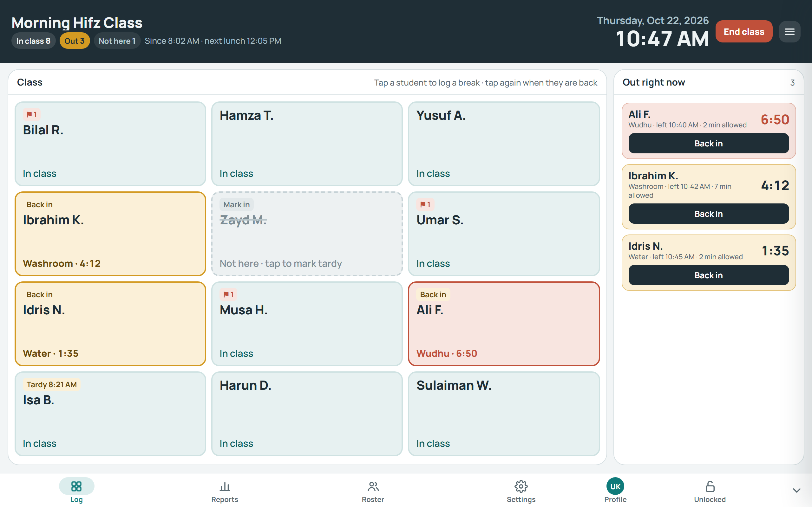

For madrasas, schools and classrooms
Who’s out, for how long, and when they’re back.
A tablet app for teachers. Tap a student when they step out, tap again when they’re back. Attendance and break reports build themselves.
Use it in your browser, or get the app for Android and Windows. On iPhone or iPad, add the website to your home screen.
